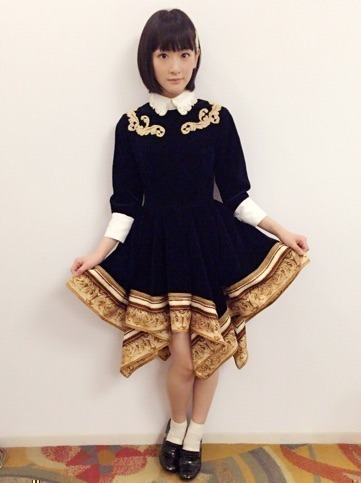
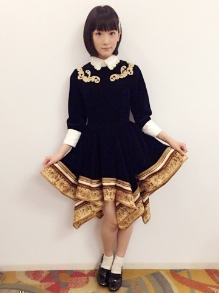
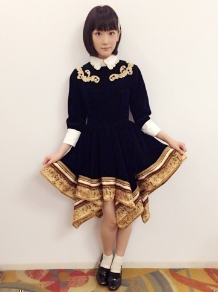
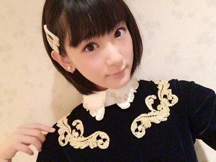

| 2015/12 02 Wed | 髪伸びたなぁ。 |
生駒ちゃんですヽ(・∀・)ノ
今日は2015 FNS歌謡祭でしたヽ(・∀・)ノ
衣装も冬にぴったりなシックなワンピース
 


私服でも欲しい！
生駒ちゃんの好み

髪も前髪伸びて、やっと地毛で堂々とテレビに写れますヽ(・∀・)ノ
しばらくは、この長さキープかなぁ〜♪
そして先日の11月29日は幕張メッセで個別握手会がありましたヽ(・∀・)ノ
来てくださった皆さんありがとうございました！！
紅白出場おめでとう！
皆さんに笑顔で言ってもらえて凄く嬉しかったです！！
頑張ります！！
お洋服はダイナソーシャツ着ました⭐︎
最近のお気に入り⭐︎⭐︎
また新たにお洋服買いに行きたいのですが、おそ松さん見たくて結局お家に引きこもってます

アニメイトオンラインに毎日アクセスしてるよヽ(・∀・)ノ
ディアラヴァのカレンダー予約したよう

年末モードに心も体もスイッチ切り替えて明日からも頑張りますヽ(・∀・)ノ
へばなっ☆彡
コメント(731)
2015/12/02 22:46